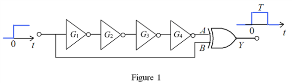

Refer to Figure 15.29 in the textbook.
Calculate the number of inverters required for the design.
Substitute for and for  .
.
Thus, the number of inverters required for the design is .
Draw the designed one shot circuit.

Thus, the one shot circuit is designed and shown in Figure 1.